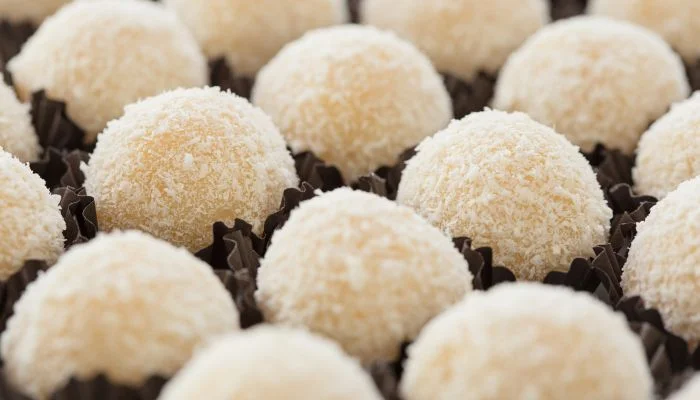

Home
Beijinho

O beijinho é um doce típico de festas brasileiras, preparado com leite condensado,
manteiga e coco ralado. Ele é enrolado em pequenas bolinhas, passadas no coco ou açúcar
cristal, e geralmente decorado com um cravo-da-índia, trazendo um sabor delicado e
marcante.
Ingredientes:
- 1 lata de leite condensado
- 1 colher de sopa de manteiga
- 100g de coco ralado (mais um pouco para enrolar)
- Açúcar cristal para enrolar (opcional)
- Cravos-da-índia para decorar (opcional)
Modo de preparo:
- Em uma panela, coloque o leite condensado, a manteiga e o coco ralado.
- Cozinhe em fogo baixo, mexendo sempre, até desgrudar do fundo da panela.
- Transfira para um prato untado e deixe esfriar.
- Com as mãos untadas, faça bolinhas, passe no coco ralado (ou açúcar cristal) e decore com um cravo-da-índia.
- Coloque em forminhas e sirva.
Aproveite seu beijinho!